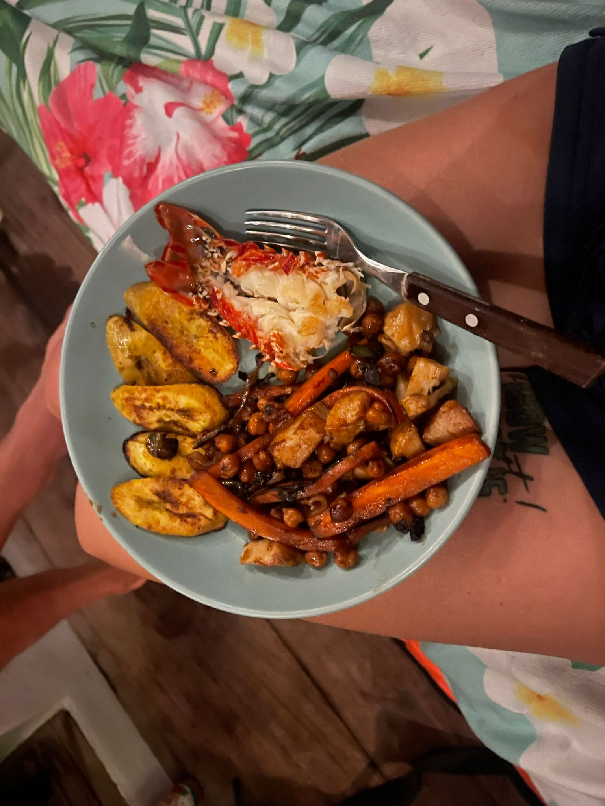
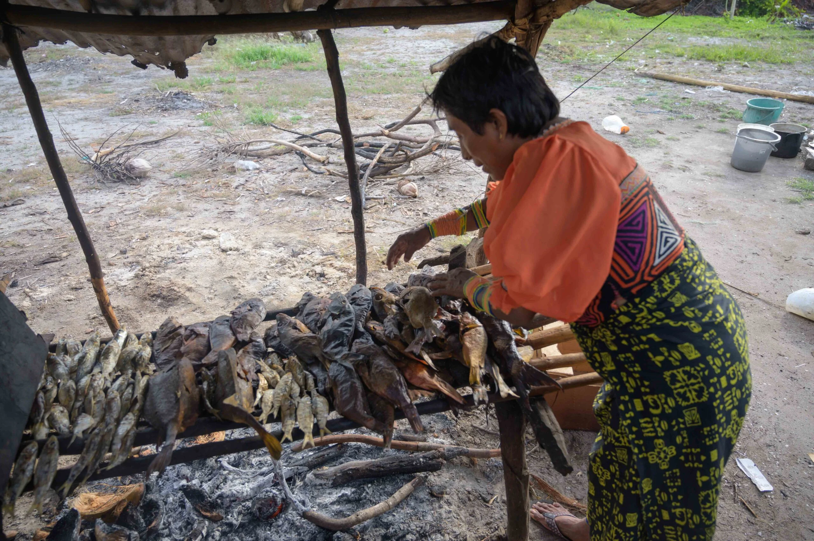
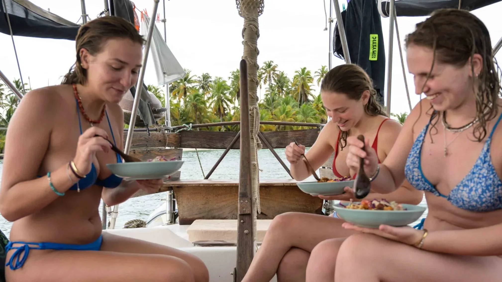
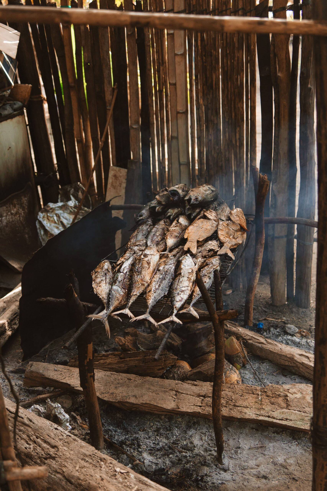

Cooking on a sailboat is more than a challenge—it's a creative, cultural experience and a great opportunity to connect with your surroundings. With limited space and the rhythm of the sea, meals become shared moments of connection. In San Blas, the kitchen on board is filled with flavors from the ocean and local Guna traditions.
In this post, I'll share what it's like to cook at sea, the ingredients we use, how I learned from Guna women and fellow sailors, and end with a Caribbean lobster paella recipe we often make aboard.

Cooking at Sea — Simple, Local, and Creative
Sailboat kitchens are small and always in motion. But that doesn't mean you can't prepare delicious, healthy food. On the contrary—meals at sea often become the heart of the experience. Most of the ingredients we use come directly from the sea or from the hands of the Kunas. We cook with what's available:
Fresh fish and seafood from the ocean
Tropical fruits like mango, papaya, pineapple
Root vegetables like yuca and green plantains
Organic avocados and dried legumes for plant-based protein
Everything is natural, local, and nourishing. We also minimize waste by avoiding processed or packaged foods.

Learning from Sea Women and Guna Cooks
I learned to cook while sailing, thanks to the knowledge shared with me by other women of the sea: captains, traveling soul-cooks, and generous Guna women who taught me their traditional recipes. Some of our onboard staples include:
Tule Masi — A Guna fish soup made with coconut milk and green plantain
Patacones — Double-fried plantain slices, often filled with grilled fish, veggies, or mango salsa
Ceviche — Made with fish caught the same day
Homemade bread, coconut gratings, and ginger lemonade
Improvisation is key. Sometimes we make ceviche with the fish we caught that morning, grate coconuts on a nearby island, bake homemade bread, or make natural lemonade with ginger and raw sugar.

Food as Connection — Body, Culture, and Ocean
Cooking on board isn't just about feeding the crew. It's a daily ritual that connects us to the sea, the land, and the people. It's how we share, nourish, and slow down. The act of cooking itself becomes part of the sailing journey. With simple, local ingredients, you can eat incredibly well—even in a tiny floating kitchen.

BONUS Recipe: Caribbean Lobster Paella (serves 2–3)
Ingredients:
2 medium lobsters (or 3 small ones)
1 cup short-grain rice (bomba or similar)
1/2 onion
1/2 red bell pepper
2 garlic cloves
1 ripe tomato (or 1/2 cup grated)
1/2 tsp turmeric
1/2 cup white wine (optional)
Homemade stock (from lobster shells or salted water)
Olive oil
Salt and pepper
Local chili or hot pepper (optional)
Preparation:
Make the stock: Boil lobster heads/legs with garlic, onion & salt for 15–20 min.
Pre-cook lobster: Boil for 2 min. Remove meat, cut into pieces.
Make sofrito: Sauté onion, garlic, pepper, and tomato. Add turmeric.
Add rice: Stir in rice, add wine, then hot stock (2:1 ratio).
Simmer: Cook without stirring. When rice is almost done, place lobster on top.
Let rest: Cover and let sit for 5–10 min. Serve with lime and chili if desired.
Want to Taste This at Sea?
If this sounds like your kind of adventure, you're not alone. Guests always ask about our food—and now you know a bit of what goes into it. Join us for a sailing experience that nourishes body, soul, and story.